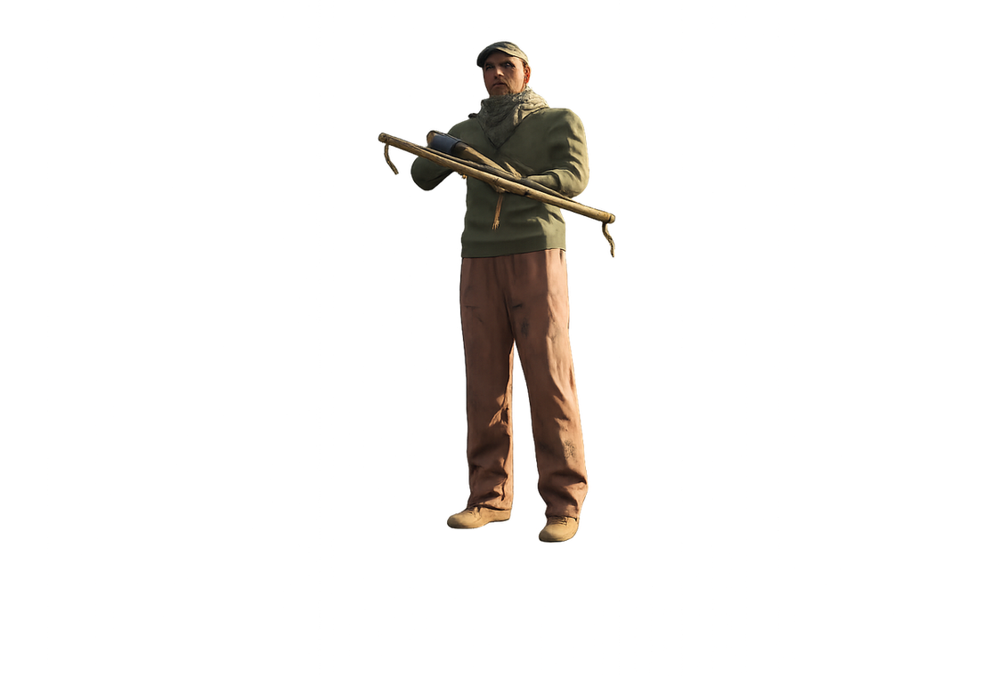
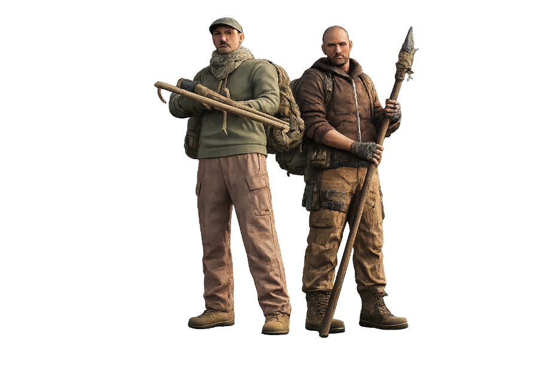
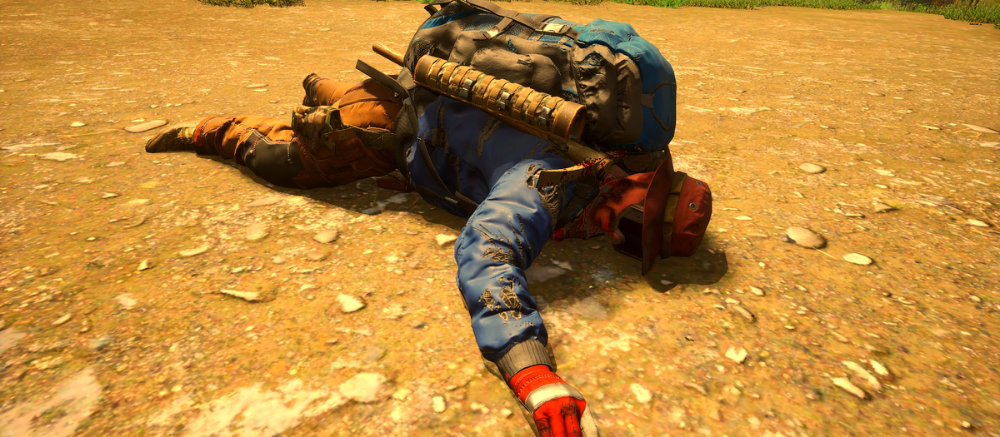

La guerre n'a pas seulement détruit les villes. Elle a détruit les lois, les gouvernements et tout ce qui maintenait autrefois les hommes unis.
Dix ans après l'effondrement, les routes et les ruines sont encore parcourues par des groupes humains hostiles. Ils n'offrent aucune discussion, aucune négociation et aucune scène RP.


Lorsque les prisons se sont effondrées, des milliers de détenus ont retrouvé leur liberté. Pour beaucoup, le monde extérieur est devenu une immense zone de chasse.
Ils attaquent les inconnus afin de récupérer armes, nourriture, munitions ou équipement. Chaque voyageur représente un butin potentiel.
Ce sont généralement les moins bien équipés. Leurs armes sont souvent rudimentaires, récupérées ou en mauvais état. Ne les sous-estimez pas : leur agressivité compense largement leur manque de matériel.
Tous les monstres ne sont pas nés criminels. Certains étaient autrefois de simples civils. Mais dix années de guerre, de famine et de violence ont fini par les transformer.
Ils considèrent les autres survivants comme des concurrents directs pour les ressources encore disponibles. Ils tirent les premiers afin d'éviter d'être ceux qui tomberont demain.
Leur équipement est moyen, mais létal. Armes civiles, matériel récupéré, protections improvisées ou pièces militaires trouvées au fil des années : ils ne sont pas les mieux armés, mais restent extrêmement dangereux.

Lorsque les gouvernements se sont effondrés, certains soldats ont refusé de déposer les armes. Privés de commandement et coupés du reste du monde, ils continuent d'appliquer leurs propres protocoles.
Ils considèrent toute présence non autorisée comme une menace. Quiconque pénètre dans leur secteur devient une cible. Pour eux, vous n'êtes ni un survivant ni un civil : vous êtes un intrus.
Ce sont les PNJ humains les mieux équipés. Meilleures armes, protections supérieures, discipline et meilleure efficacité au combat : ils représentent la menace humaine la plus dangereuse.
Les PNJ humains sont réglés pour rester dangereux sans transformer chaque rencontre en exécution impossible à éviter.
| Difficulté | Niveau 1 |
| Santé | x0.9 |
| Dégâts | x0.8 |
| Vitesse | x0.9 |
| Chance de drop de l'objet en main | 50% |
| État maximal de l'objet récupéré | 60% |
Les PNJ humains du serveur sont hostiles. Qu'ils soient d'anciens prisonniers, des survivants devenus prédateurs ou des militaires refusant d'abandonner leur mission, tous partagent un point commun :
Ils n'engageront aucune discussion.
Ils n'offriront aucune seconde chance.
Lorsqu'ils vous repèrent, ils chercheront à vous tuer.
Dans ce nouveau monde, les machines ne sont pas les seules à avoir oublié ce qu'était la pitié.